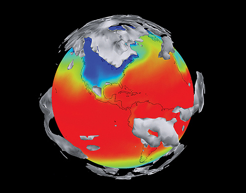
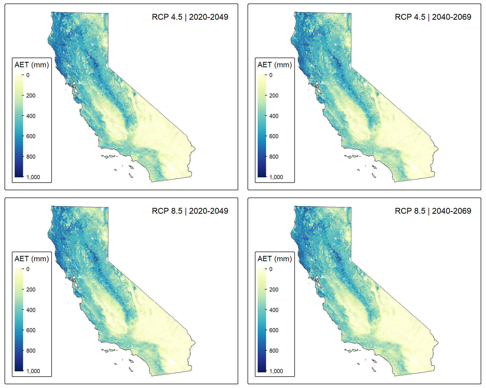
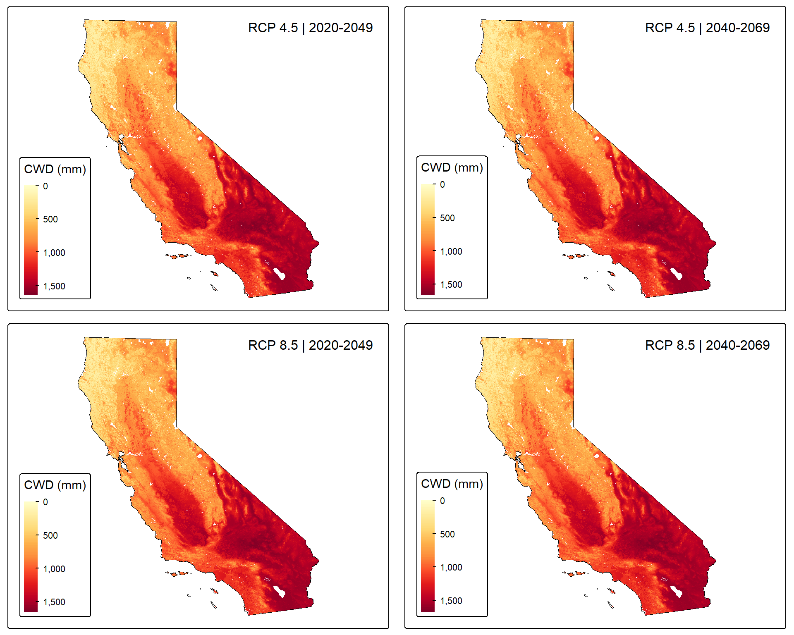
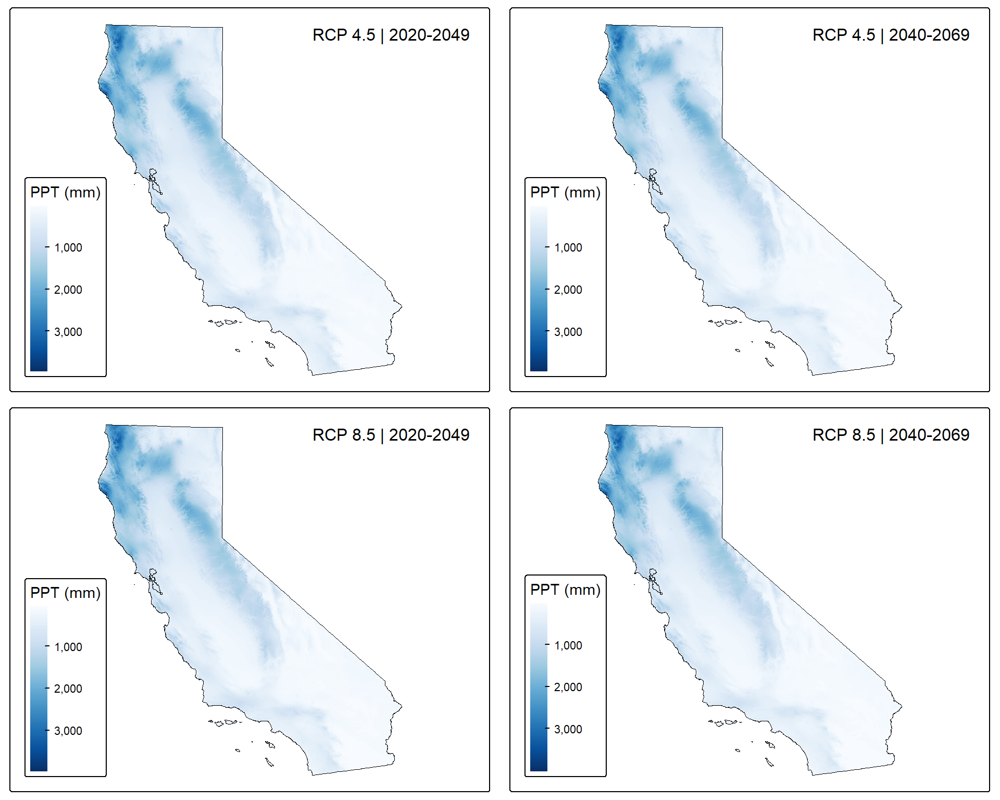

flowchart LR
A[Extract] --> B[Transform] --> C[Align] --> D[Load]
A1[Read .asc files from<br/>18 nested folders] --> A
B1[Average across<br/>3 GCMs] --> B
C1[Reproject, resample,<br/>clip, & mask] --> C
D1[Save as .tif<br/>12 output files] --> D

Background & Overview
This work sample demonstrates the construction of a data pipeline to process future climate projections from the Basin Characterization Model (BCM) for use in SDM forecasting and a subsequent spatial optimization analysis—using the prioritizr package—to inform strategic agricultural land retirement in California’s San Joaquin Valley. The pipeline automates the extraction, transformation, and loading of 36 individual raster files into 12 analysis-ready GeoTIFFs, each representing an ensemble average across multiple climate models.
The goals of this pipeline are to:
- Extract climate variable data from a nested folder structure containing multiple GCMs, emission scenarios, and time periods
- Average rasters across GCMs to create ensemble projections that account for model uncertainty
- Align all outputs to a common reference raster (matching CRS, resolution, extent, and mask)
- Save processed rasters as GeoTIFFs ready for SDM projection
This type of systematic, reproducible workflow is essential for any analysis involving large volumes of geospatial data and is a transferable skill applicable across environmental data science.
Why Data Pipelines Matter
A data pipeline is a series of automated, sequential steps that move and transform data from raw inputs to analysis-ready outputs. In environmental data science, pipelines are critical for several reasons:
- Reproducibility: The same code can be re-run to produce identical outputs, which is essential for scientific integrity and collaboration
- Scalability: A well-designed pipeline can easily accommodate additional variables, time periods, or scenarios without needing to rewrite large amounts of code
- Error reduction: Automating repetitive tasks minimizes human error that can occur with manual processing
- Documentation: The pipeline itself serves as documentation of the data processing steps, making methods transparent and shareable
This pipeline follows the classic ETL (Extract, Transform, Load) pattern commonly used in data engineering, adapted here for geospatial climate data.

Why Use an Ensemble of Climate Models?
When modeling future environmental conditions (such as species distributions), we rely on climate projections from Global Climate Models (GCMs). However, different GCMs can produce varying predictions for the same future scenario due to differences in their underlying physics, parameterizations, and assumptions.
Rather than arbitrarily selecting a single GCM, best practices in SDM forecasting recommend using an ensemble approach—averaging predictions across multiple GCMs. This approach:
- Accounts for model uncertainty: No single GCM is definitively “correct,” and ensemble averaging captures the range of plausible futures
- Reduces bias: Individual model biases tend to cancel out when averaged
- Improves robustness: Ensemble projections are generally more reliable than any single model projection
In this pipeline, we average across three GCMs (CNRM-CM5, GFDL-CM3, and MIROC5) for each climate variable, emission scenario, and time period combination.
Data Description
Climate Variables
The BCM provides downscaled climate and hydrologic projections for California. This analysis uses three climate variables that are ecologically relevant for the species whose distributions we’re modeling:
| Variable | Description | Ecological Relevance |
|---|---|---|
| AET | Actual Evapotranspiration | Represents water actually used by vegetation; indicates water availability for plant growth |
| CWD | Climatic Water Deficit | The difference between potential and actual evapotranspiration; indicates drought stress |
| PPT | Precipitation | Total water input to the system; fundamental driver of water availability |
Global Climate Models (GCMs)
Three GCMs from the Coupled Model Intercomparison Project Phase 5 (CMIP5) are included:
| GCM | Modeling Center(s) | Year Published |
|---|---|---|
| CNRM-CM5 | Centre National de Recherches Météorologiques; Centre Européen de Recherche et de Formation Avancée | 2012 |
| GFDL-CM3 | NOAA Geophysical Fluid Dynamics Laboratory | 2011 |
| MIROC5 | Center for Climate System Research (University of Tokyo); Japan Agency for Marine-Earth Science and Technology; National Institute for Environmental Studies | 2010 |
Emission Scenarios
Two Representative Concentration Pathways (RCPs) represent different greenhouse gas emission trajectories:
| Scenario | Description |
|---|---|
| RCP 4.5 | medium-low emissions |
| RCP 8.5 | high emissions |
Time Periods
Two 30-year averaging periods capture near-term and mid-century projections:
- 2020-2049: Near-term future
- 2040-2069: Mid-century future
File Structure
The raw BCM data is organized in the following structure:
bcmv8_future/
├── aet_CNRM-CM5_RCP45_30yr/
│ ├── aet_2020_2049_ave.asc
│ ├── aet_2040_2069_ave.asc
│ └── ... (other time periods)
├── aet_CNRM-CM5_RCP85_30yr/
├── aet_GFDL-CM3_RCP45_30yr/
├── ... (18 folders total)
└── ppt_MIROC5_RCP85_30yr/Each of the 18 folders contains .asc raster files for different 30-year averaging periods. For this analysis, we extract 2 files from each folder (2020-2049 and 2040-2069), resulting in 36 input files that are processed into 12 ensemble-averaged outputs.
Pipeline Overview
The pipeline consists of four main stages:
| Stage | Description | Input | Output |
|---|---|---|---|
| Extract | Read raw .asc files from 18 nested folders based on systematic naming conventions |
36 .asc files |
Raster objects in memory |
| Transform | Calculate ensemble mean across 3 GCMs | 3 rasters per combination | 1 ensemble raster |
| Align | Match CRS, resolution, extent, and mask to reference | Ensemble raster | Aligned raster |
| Load | Write processed rasters to disk | Aligned raster | 12 .tif files |
Setup
Load packages
Show packages used in this analysis
library(terra) # raster processing
library(here) # file path management
library(tidyverse) # data manipulation & visualization
library(tigris) # US Census boundary data
library(sf) # vector data handling
library(tmap) # map visualization
library(patchwork) # combining plotsDefine file paths and parameters
The first step is to define the input and output directories, along with the parameters that define the scope of our processing. By defining these upfront, the pipeline becomes easily adaptable to different datasets or expanded analyses.
Show the code
# define file paths
input_dir <- here("posts/2026-01-08-bcm-data-pipeline/data/raw/bcmv8_future/")
output_dir <- here("posts/2026-01-08-bcm-data-pipeline/data/output/bcm_gcm_ensemble/")
# define parameters for the pipeline
climate_vars <- c("aet", "cwd", "ppt")
gcms <- c("CNRM-CM5", "GFDL-CM3", "MIROC5")
scenarios <- c("RCP45", "RCP85")
time_periods <- c("2020_2049", "2040_2069")Load the reference raster
All output rasters will be aligned to match this reference raster’s coordinate reference system (CRS), resolution, extent, and mask. Using a consistent reference ensures that all layers stack properly for SDM analysis.
Show the code
# load the processed historic AET raster as the reference
ref_raster <- rast(here("posts/2026-01-08-bcm-data-pipeline/data/aet1991_2020_ave_CA_270m.tif"))Pipeline Functions
The pipeline relies on three custom functions that handle the core processing steps. Breaking the workflow into modular functions improves code readability, reusability, and debugging.
Function 1: Construct file paths
This function dynamically builds the file path for any combination of climate variable, GCM, scenario, and time period based on the BCM naming conventions. This approach is more robust than hard-coding paths and scales easily to additional files.
Show the file path construction function
get_asc_path <- function(input_dir, var, gcm, scenario, period) {
# construct folder name following BCM convention: var_GCM_scenario_30yr
folder_name <- paste0(var, "_", gcm, "_", scenario, "_30yr")
# construct file name: var_period_ave.asc
file_name <- paste0(var, "_", period, "_ave.asc")
# combine into full path
file_path <- file.path(input_dir, folder_name, file_name)
return(file_path)
}Function 2: Average rasters across GCMs
This function handles the ensemble averaging step. For a given variable, scenario, and time period, it reads rasters from all three GCMs, assigns the correct CRS (BCM data uses California Albers, EPSG:3310), and calculates the pixel-wise mean.
Show the ensemble averaging function
average_across_gcms <- function(input_dir, var, gcms, scenario, period) {
# initialize list to store rasters from each GCM
raster_list <- list()
for (i in seq_along(gcms)) {
gcm <- gcms[i]
file_path <- get_asc_path(input_dir, var, gcm, scenario, period)
# check if file exists before attempting to read
if (!file.exists(file_path)) {
warning("File not found: ", file_path)
next
}
# read the raster
message(" Reading: ", basename(file_path), " from ", gcm)
r <- rast(file_path)
# assign CRS - BCM data uses California Albers (EPSG:3310)
# .asc files don't store CRS information, so we set it explicitly
crs(r) <- "EPSG:3310"
raster_list[[i]] <- r
}
# verify we have rasters to process
if (length(raster_list) == 0) {
stop("No rasters found for ", var, " ", scenario, " ", period)
}
# stack rasters and calculate ensemble mean
raster_stack <- rast(raster_list)
ensemble_mean <- mean(raster_stack, na.rm = TRUE)
return(ensemble_mean)
}Function 3: Align raster to reference
This function ensures spatial consistency across all outputs by reprojecting (if needed), resampling to match the reference resolution and extent, and applying the reference mask. The method = "mean" parameter uses mean aggregation during resampling, which is appropriate for continuous climate variables.
Show the raster alignment function
align_to_reference <- function(input_raster, ref_raster, method = "mean") {
# step 1: reproject to match reference CRS if needed
if (!same.crs(input_raster, ref_raster)) {
message(" Reprojecting to match reference CRS...")
input_raster <- project(input_raster, crs(ref_raster))
}
# step 2: resample to match reference resolution and extent
message(" Resampling to match reference resolution and extent...")
aligned_raster <- resample(input_raster, ref_raster, method = method)
# step 3: mask to reference raster (apply NA pattern from reference)
message(" Masking to reference raster...")
aligned_raster <- mask(aligned_raster, ref_raster)
return(aligned_raster)
}Execute the Pipeline
With our functions defined, we can now execute the main processing loop. The nested for loops iterate through all combinations of climate variables, emission scenarios, and time periods—processing 12 unique combinations in total.
Show the main pipeline execution code
# initialize vector to track output file paths
output_files <- character()
# iterate through all combinations
for (var in climate_vars) {
for (scenario in scenarios) {
for (period in time_periods) {
message("\n", paste(rep("=", 50), collapse = ""))
message("Processing: ", toupper(var), " | ", scenario, " | ", period)
message(paste(rep("=", 50), collapse = ""))
# STEP 1 & 2: Extract and calculate ensemble mean across GCMs
ensemble_raster <- average_across_gcms(
input_dir = input_dir,
var = var,
gcms = gcms,
scenario = scenario,
period = period
)
# STEP 3: Align to reference raster
message(" Aligning to reference raster...")
ensemble_raster <- align_to_reference(
input_raster = ensemble_raster,
ref_raster = ref_raster,
method = "mean"
)
# STEP 4: Save as GeoTIFF
output_name <- paste0(var, "_", scenario, "_", period, "_gcm_ensemble.tif")
output_path <- file.path(output_dir, output_name)
writeRaster(
ensemble_raster,
filename = output_path,
overwrite = TRUE
)
message(" Saved: ", output_name)
output_files <- c(output_files, output_path)
}
}
}
# print summary
message("\n", paste(rep("=", 50), collapse = ""))
message("Pipeline complete! Created ", length(output_files), " files.")
message(paste(rep("=", 50), collapse = ""))Visualize the Results
To verify the pipeline outputs and explore the climate projections, let’s create maps of the processed rasters. These visualizations help confirm that the data was processed correctly and provide insight into the spatial patterns of projected climate change.
Load processed rasters
Show the code
# load all 12 ensemble-averaged rasters
aet_rcp45_2020 <- rast(file.path(output_dir, "aet_RCP45_2020_2049_gcm_ensemble.tif"))
aet_rcp45_2040 <- rast(file.path(output_dir, "aet_RCP45_2040_2069_gcm_ensemble.tif"))
aet_rcp85_2020 <- rast(file.path(output_dir, "aet_RCP85_2020_2049_gcm_ensemble.tif"))
aet_rcp85_2040 <- rast(file.path(output_dir, "aet_RCP85_2040_2069_gcm_ensemble.tif"))
cwd_rcp45_2020 <- rast(file.path(output_dir, "cwd_RCP45_2020_2049_gcm_ensemble.tif"))
cwd_rcp45_2040 <- rast(file.path(output_dir, "cwd_RCP45_2040_2069_gcm_ensemble.tif"))
cwd_rcp85_2020 <- rast(file.path(output_dir, "cwd_RCP85_2020_2049_gcm_ensemble.tif"))
cwd_rcp85_2040 <- rast(file.path(output_dir, "cwd_RCP85_2040_2069_gcm_ensemble.tif"))
ppt_rcp45_2020 <- rast(file.path(output_dir, "ppt_RCP45_2020_2049_gcm_ensemble.tif"))
ppt_rcp45_2040 <- rast(file.path(output_dir, "ppt_RCP45_2040_2069_gcm_ensemble.tif"))
ppt_rcp85_2020 <- rast(file.path(output_dir, "ppt_RCP85_2020_2049_gcm_ensemble.tif"))
ppt_rcp85_2040 <- rast(file.path(output_dir, "ppt_RCP85_2040_2069_gcm_ensemble.tif"))
# check range of values; looks like some rasters have -9999 for NAs
summary(aet_rcp45_2020)
summary(cwd_rcp45_2020)
# all of the aet and cwd rasters record NAs as -9999, so set that to NA
values(aet_rcp45_2020)[values(aet_rcp45_2020) == -9999] <- NA
values(aet_rcp45_2040)[values(aet_rcp45_2040) == -9999] <- NA
values(aet_rcp85_2020)[values(aet_rcp85_2020) == -9999] <- NA
values(aet_rcp85_2040)[values(aet_rcp85_2040) == -9999] <- NA
values(cwd_rcp45_2020)[values(cwd_rcp45_2020) == -9999] <- NA
values(cwd_rcp45_2040)[values(cwd_rcp45_2040) == -9999] <- NA
values(cwd_rcp85_2020)[values(cwd_rcp85_2020) == -9999] <- NA
values(cwd_rcp85_2040)[values(cwd_rcp85_2040) == -9999] <- NALoad California boundary for map context
Show the code
# get California state boundary
ca_boundary <- tigris::states(cb = TRUE) %>%
filter(NAME == "California") %>%
st_transform(crs(aet_rcp45_2020))Actual Evapotranspiration (AET) projections
Show the code
# get the bounding box and expand it
ca_bbox <- st_bbox(ca_boundary)
# xmin, ymin, xmax, ymax buffer in CRS units
ca_bbox_expanded <- ca_bbox + c(-50000, -50000, 50000, 50000)
tmap_mode("plot")
# create individual maps
map_aet_rcp45_2020 <- tm_shape(aet_rcp45_2020, bbox = ca_bbox_expanded) +
tm_raster(style = "cont", palette = "YlGnBu", title = "AET (mm)") +
tm_shape(ca_boundary) + tm_borders(col = "black", lwd = 0.5) +
tm_layout(title = "RCP 4.5 | 2020-2049", title.size = 1,
title.position = c("right", "top"),
legend.outside = FALSE, legend.position = c("left", "bottom"))
map_aet_rcp45_2040 <- tm_shape(aet_rcp45_2040, bbox = ca_bbox_expanded) +
tm_raster(style = "cont", palette = "YlGnBu", title = "AET (mm)") +
tm_shape(ca_boundary) + tm_borders(col = "black", lwd = 0.5) +
tm_layout(title = "RCP 4.5 | 2040-2069", title.size = 1,
title.position = c("right", "top"),
legend.outside = FALSE, legend.position = c("left", "bottom"))
map_aet_rcp85_2020 <- tm_shape(aet_rcp85_2020, bbox = ca_bbox_expanded) +
tm_raster(style = "cont", palette = "YlGnBu", title = "AET (mm)") +
tm_shape(ca_boundary) + tm_borders(col = "black", lwd = 0.5) +
tm_layout(title = "RCP 8.5 | 2020-2049", title.size = 1,
title.position = c("right", "top"),
legend.outside = FALSE, legend.position = c("left", "bottom"))
map_aet_rcp85_2040 <- tm_shape(aet_rcp85_2040, bbox = ca_bbox_expanded) +
tm_raster(style = "cont", palette = "YlGnBu", title = "AET (mm)") +
tm_shape(ca_boundary) + tm_borders(col = "black", lwd = 0.5) +
tm_layout(title = "RCP 8.5 | 2040-2069", title.size = 1,
title.position = c("right", "top"),
legend.outside = FALSE, legend.position = c("left", "bottom"))
# arrange in 2x2 grid
tmap_arrange(map_aet_rcp45_2020, map_aet_rcp45_2040,
map_aet_rcp85_2020, map_aet_rcp85_2040,
ncol = 2, nrow = 2)

Climatic Water Deficit (CWD) projections
Show the code
map_cwd_rcp45_2020 <- tm_shape(cwd_rcp45_2020, bbox = ca_bbox_expanded) +
tm_raster(style = "cont", palette = "YlOrRd", title = "CWD (mm)") +
tm_shape(ca_boundary) + tm_borders(col = "black", lwd = 0.5) +
tm_layout(title = "RCP 4.5 | 2020-2049", title.size = 1,
title.position = c("right", "top"),
legend.outside = FALSE, legend.position = c("left", "bottom"))
map_cwd_rcp45_2040 <- tm_shape(cwd_rcp45_2040, bbox = ca_bbox_expanded) +
tm_raster(style = "cont", palette = "YlOrRd", title = "CWD (mm)") +
tm_shape(ca_boundary) + tm_borders(col = "black", lwd = 0.5) +
tm_layout(title = "RCP 4.5 | 2040-2069", title.size = 1,
title.position = c("right", "top"),
legend.outside = FALSE, legend.position = c("left", "bottom"))
map_cwd_rcp85_2020 <- tm_shape(cwd_rcp85_2020, bbox = ca_bbox_expanded) +
tm_raster(style = "cont", palette = "YlOrRd", title = "CWD (mm)") +
tm_shape(ca_boundary) + tm_borders(col = "black", lwd = 0.5) +
tm_layout(title = "RCP 8.5 | 2020-2049", title.size = 1,
title.position = c("right", "top"),
legend.outside = FALSE, legend.position = c("left", "bottom"))
map_cwd_rcp85_2040 <- tm_shape(cwd_rcp85_2040, bbox = ca_bbox_expanded) +
tm_raster(style = "cont", palette = "YlOrRd", title = "CWD (mm)") +
tm_shape(ca_boundary) + tm_borders(col = "black", lwd = 0.5) +
tm_layout(title = "RCP 8.5 | 2040-2069", title.size = 1,
title.position = c("right", "top"),
legend.outside = FALSE, legend.position = c("left", "bottom"))
tmap_arrange(map_cwd_rcp45_2020, map_cwd_rcp45_2040,
map_cwd_rcp85_2020, map_cwd_rcp85_2040,
ncol = 2, nrow = 2)

Precipitation (PPT) projections
Show the code
map_ppt_rcp45_2020 <- tm_shape(ppt_rcp45_2020, bbox = ca_bbox_expanded) +
tm_raster(style = "cont", palette = "Blues", title = "PPT (mm)") +
tm_shape(ca_boundary) + tm_borders(col = "black", lwd = 0.5) +
tm_layout(title = "RCP 4.5 | 2020-2049", title.size = 1,
title.position = c("right", "top"),
legend.outside = FALSE, legend.position = c("left", "bottom"))
map_ppt_rcp45_2040 <- tm_shape(ppt_rcp45_2040, bbox = ca_bbox_expanded) +
tm_raster(style = "cont", palette = "Blues", title = "PPT (mm)") +
tm_shape(ca_boundary) + tm_borders(col = "black", lwd = 0.5) +
tm_layout(title = "RCP 4.5 | 2040-2069", title.size = 1,
title.position = c("right", "top"),
legend.outside = FALSE, legend.position = c("left", "bottom"))
map_ppt_rcp85_2020 <- tm_shape(ppt_rcp85_2020, bbox = ca_bbox_expanded) +
tm_raster(style = "cont", palette = "Blues", title = "PPT (mm)") +
tm_shape(ca_boundary) + tm_borders(col = "black", lwd = 0.5) +
tm_layout(title = "RCP 8.5 | 2020-2049", title.size = 1,
title.position = c("right", "top"),
legend.outside = FALSE, legend.position = c("left", "bottom"))
map_ppt_rcp85_2040 <- tm_shape(ppt_rcp85_2040, bbox = ca_bbox_expanded) +
tm_raster(style = "cont", palette = "Blues", title = "PPT (mm)") +
tm_shape(ca_boundary) + tm_borders(col = "black", lwd = 0.5) +
tm_layout(title = "RCP 8.5 | 2040-2069", title.size = 1,
title.position = c("right", "top"),
legend.outside = FALSE, legend.position = c("left", "bottom"))
tmap_arrange(map_ppt_rcp45_2020, map_ppt_rcp45_2040,
map_ppt_rcp85_2020, map_ppt_rcp85_2040,
ncol = 2, nrow = 2)

Reflection
This work sample demonstrates the design and implementation of a data pipeline for processing climate projection data—a common task in environmental data science that requires careful attention to data organization, spatial alignment, and reproducibility.
Key skills demonstrated:
- Data pipeline design: Structuring a workflow with clear extraction, transformation, and loading stages that can be easily understood, modified, and scaled
- Geospatial data processing: Working with raster data in R using the
terrapackage, including reprojection, resampling, and masking operations - Modular programming: Writing reusable functions that abstract complex operations and improve code maintainability
- Climate science literacy: Understanding the rationale for ensemble averaging across GCMs and the interpretation of different emission scenarios
Why this matters:
Data pipelines are foundational infrastructure in any data-driven organization. Whether processing climate projections for ecological modeling, ETL workflows for business analytics, or data preprocessing for machine learning, the principles demonstrated here—automation, reproducibility, modularity, and clear documentation—are universally applicable.
The ability to take large amounts of data and transform them into analysis-ready outputs is a critical skill that bridges the gap between raw data and actionable insights. This pipeline reduced 36 individual files across 18 folders into 12 standardized, ensemble-averaged rasters ready for species distribution modeling—a transformation that would be error-prone and time-consuming if done manually.
Data Sources
- Basin Characterization Model (BCM) v8: Future Climate and Hydrology from Twenty Localized Constructed Analog (LOCA) Scenarios and the Basin Characterization Model (BCMv8) (ver. 1.1, November 2024)
- California State Boundary: US Census Bureau TIGER/Line Shapefiles via the
tigrisR package
Acknowledgements
This analysis was conducted as part of research on strategic agricultural land retirement in California’s San Joaquin Valley. This work is supported by the Earth Research Institute at UC Santa Barbara.
Citation
BibTeX citation:
@online{pepperdine2026,
author = {Pepperdine, Maxwell},
title = {Building a Data Pipeline for Climate Projection Processing},
date = {2026-01-08},
url = {https://maxpepperdine.github.io/posts/2026-01-08-bcm-data-pipeline/},
langid = {en}
}
For attribution, please cite this work as:
Pepperdine, Maxwell. 2026. “Building a Data Pipeline for Climate
Projection Processing.” January 8, 2026. https://maxpepperdine.github.io/posts/2026-01-08-bcm-data-pipeline/.